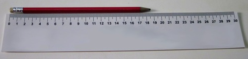

In this chapter, learners are introduced to the pH scale and learn how to measure and interpret pH values. There are two activities around pH measurement in this chapter: One is a paper activity and one is an investigation using indicators. There is an introductory activity on measurement - this helps to link this content to what learners might be doing in other subjects, such as Mathematics and Technology, and also to what they already know about measurement.
The investigation uses universal indicator paper and red cabbage paper to measure the pH of a selection of household products. If you do not have universal indicator paper, but have universal indicator solution, you could easily adapt the activity in the following way: Instead of using paper, learners should add 2 - 3 drops of universal indicator solution to their test solutions, note and record the resulting colours. Red cabbage solution can also be used instead of paper. It would be best to add approximately 1 ml of each test solution to 2 ml portions of the red cabbage water.
To make red cabbage indicator paper, follow the instructions below:
Cut a large red cabbage into thin slices and place it in a pot.
Add just enough water to cover the cabbage slices.
Boil it over low heat for approximately 30 minutes, adding water to keep the cabbage covered if necessary.
Remove the pot from the heat and let it cool completely.
Strain the juice off the cabbage slices into a large shallow dish. The boiled cabbage slices can be eaten (or placed in the compost).
Place sheets of absorbent paper (kitchen towel, coffee filters or filter paper) in the cabbage water.
After 30 minutes, remove the paper and leave it in a warm place to dry. You can also dry the paper with a hair dryer, but do not leave it in direct sunlight.
When the paper has completely dried, cut it into strips (approximately 1 cm wide). The strips will keep for a long time if stored in a dry place.
The time indicated for this chapter is 1 week and so a suggested 1.5 hours has been allocated to each section. However, as there are only two key tasks in this chapter, you might progress through it at a faster rate than 1 week, and then move onto the next chapter dealing with the reactions of acids with bases, which requires more time.
5.1 What is the pH value? (1.5 hours)
Tasks
Skills
Recommendation
Activity: Measuring instruments and units
Identifying, observing,
Optional (Suggested)
Activity: The pH scale
Observing, identifying, remembering
Optional (Suggested)
5.2 Indicators (1.5 hours)
Tasks
Skills
Recommendation
Investigation: Universal indicator paper and red cabbage indicator paper
What measurement can we use to decide whether something is an acid or a base?
What does 'the pH scale' refer to?
How can we measure the pH of a substance?
What does it mean if a substance has a pH below 7?
What does it mean if a substance has a pH above 7?
What does it mean when a substance has a pH equal to 7?
How does a universal indicator respond to substances that are acidic, basic, or neutral?
What is the pH value?
unit
acidity
pH
When we want to say something has the properties of an acid, we use the adjective acidic. When we want to say something has the properties of a base, we use the adjective basic.
In Grade 7 we learnt about acids and bases. Can you remember how to distinguish between them? Here is a table that highlights the main characteristics of acids and bases.
Acids
Bases
Taste sour
Feel rough between your fingers
Can be corrosive
Can make bases lose their basic character
Turn blue litmus red
Taste bitter
Feel slippery between your fingers
Can be corrosive
Can make acids lose their acidic character
Turn red litmus blue
We used the criteria in the table above to classify a number of substances as either acids, bases, or neutral substances. The table below contains some examples and shows their classification.
Acids
Bases
Neutral substances
Orange juice
Vinegar
Lemon juice
Citric acid
Gastric acid (stomach acid)
Bicarbonate of soda (baking soda)
Soaps
Bleach
Ammonia solution
Water
Table salt solution
Cooking oil
Finally, we learnt that there are substances that we can use that will show whether we have an acid or a base. Can you remember what they were called? Hint: They indicate, or show, whether we have an acid or base.
Indicators
Indicators can show us if a substance is an acid or a base. In this chapter we are going to link some important new learning to what we already know about acids and bases.
The most important new idea is that we can 'measure' how acidic or basic a substance is.
A word or two on measurement
This section briefly creates the link between what learners might have done in other subjects and in previous grades about measurement and scales, especially Mathematics. It is used to show that many things can be measured and is used to introduce the idea of measuring how acidic or basic a substance is, as before this we only ever classified a substance as an acid or a base and did not make reference to a scale.
Let us talk briefly about 'measuring'.
Measuring instruments and units
What would you measure with each of the measuring instruments below?
A measurement always consists of two things: a number and a unit. To explain what this means, let's imagine we are measuring the length of a pencil.

What is the length of the pencil in the picture?
18.5 cm
The unit is a very important part of the measurement because it shows the relative size of the measurement. If you said: "The pencil is 18.5 long", people would not be sure if you meant centimeters, millimeters, or even meters!
What unit would you use to measure the length of your classroom?
Meter (m). Centimeter is also acceptable. What learners need to realise is that the unit needs to be made explicit.
What unit would you use to measure your mass?
kilogram (kg)
What unit would you use to measure temperature?
degrees Celsius (°C)
Can we 'measure' how acidic or basic a substance is?
Measuring acidity and basicity
The unit that we use to measure the acidity of a substance (how acidic that substance is) is called pH. We pronounce the two letters, 'p' and 'H' separately when we say pH.
The term "pH" was first described by Danish biochemist Søren Peter Lauritz Sørensen in 1909. The definite origin is disputed, but it is widely accepted that pH is an abbreviation for "power of hydrogen" where "p" is short for the German word potenz (meaning power or exponent of) and H is the element symbol for hydrogen.
Have you ever heard the term pH?
Get learners to discuss this in class for a few minutes. Perhaps they have seen adverts on TV claiming that a certain brand of shampoo or skin soap is 'pH balanced'. Ask them what they think this means.
Perhaps you have heard of a certain shampoo being 'pH balanced', or a skin soap that is 'neutral'. Perhaps you have heard that it is important for the water in a swimming pool to have 'the right pH'?
The pH scale ranges between the values of 1 and 14.
In science and in everyday life, we measure the acidity of substances in pH units. We could say that the 'acidity' of a specific shampoo has a pH of 5.5. pH is the unit of measurement and 5.5 is be the number indicating the relative acidity on the pH scale. It has become acceptable, however, for us to rather say: "The pH of this shampoo is 5,5."
In the next activity, we are going to get to know the pH scale a little better.
The pH scale
INSTRUCTIONS:
In the following picture the pH values of a variety of substances are shown on the pH scale
Which of the substances in the table at the start of this chapter can you find on the pH scale above? Write their names and approximate pH values in the table below.
Name of substance
Approximate pH
Name of substance
Approximate pH
Gastric acid
1
Lemon juice
2
Orange juice
3
Distilled water
7
Baking soda (solution)
9
Ammonia solution
11
Soapy water
12
Bleach
13
Circle the names of all the acids in the table above with a red pen or koki.
Learners should circle orange juice, lemon juice and gastric acid in red.
Write the lowest and highest pH values of these acids. This represents the pH range of the acids on our list.
Find water on the scale and circle it with a green pen or koki. Is water an acid or a base? Or is it perhaps something else?
Water is neither an acid nor a base. Water is a neutral substance.
Learners may need help recalling this information.
What is the pH of water?
Water has a pH equal to 7.
Which do you think is more acidic: orange juice or lemon juice? If you are not sure, ask yourself this question: Which one is more sour?
Lemon juice is more acidic.
Which one has the lower pH: orange juice or lemon juice?
Lemon juice has a lower pH.
In the above activity we learnt a number of important things:
Acids have pH values below 7;
Bases have pH values above 7; and
Neutral substances have pH values equal to 7.
This information has been summarised visually in the following diagram.
We saw in the activity that lemon juice, which is more sour than orange juice, has a lower pH than orange juice. Does that mean that the relative pH of a substance will tell us how acidic or basic it is?
Can we measure how acidic or basic something is?
When we compared orange juice and lemon juice earlier, we learnt something important: The lower the pH of a substance, the more acidic it is. For bases we can state the folllowing: The higher the pH of a substance, the more basic it is.
Here is a summary:
The closer to pH 1, the more strongly acidic the solution;
The closer to pH 14, the more strongly basic the solution; and
pH 7 is a neutral substance.
We have learnt that the pH value of a substance tells us if it is an acid or a base. But how do we measure pH? One way to measure pH is with the help of acid-base indicators. Can you remember what they are? The next section will refresh your memory.
We know that some substances change colour when they react with an acid or a base. These substances are called acid-base indicators, which can show us if a substance is an acid or a base.
Different indicators change colour at different pH values. The table below shows a selection of acid-base indicators and the colours they will have at different pH values.
In Grade 7 we made and indicator from red cabbage and even made some red cabbage indicator paper. Can you find red cabbage water on the table above? In acids, the red cabbage water will turn red or pink. In neutral solutions it will be purple or violet. Which colours will the red cabbage indicator be when it is mixed with a base?
Blue, green or yellow
If red cabbage indicator is mixed with something that is only slightly basic, it will turn blue. If it is mixed with something that is strongly basic, it will turn yellow.
Red cabbage chemistry
When you look at the table above and you compare the information given for red cabbage water with the picture below, the colour changes you observed in the red cabbage water (in Grade 7) will make sense!
Red cabbage water mixed with base (left) and with acid (right). The blue drop at the top is the juice in a neutral solution (water).
Cabbage juice indicator
You may recall that we also learnt about litmus, the most widely used of all acid-base indicators. Can you find litmus on the table of indicators?
Litmus does not change colour in the presence of a neutral substance, but responds to acids and bases in the following way:
litmus is red in the presence of an acid; and
litmus is blue in the presence of base.
Litmus can be bought as a solution or as litmus paper, although the paper is more commonly used.
Blue and red litmus paper.
By changing to different colours in the presence of an acid or a base, indicators can show us if a substance is an acid or a base. In the next section we are going to learn about a special indicator that is so sensitive that it not only tells us whether a substance is an acid or a base, but also what its approximate pH is!
Universal indicator
Video showing universal indicator
Unlike litmus, universal indicator can show us much more accurately how acidic or basic a solution is. Can you find universal indicator on the previous table of indicators? Universal indicator can change into a whole range of colours, depending on the pH of the solution. In the following picture, solutions of increasing pH were mixed with universal indicator to show its full range of colours.
Universal indicator can have many different colours, from red for strong acids to dark purple for strong bases. The liquid inside the middle test tube is neutral (pH = 7) and this is shown by the green colour of the indicator.
Universal indicator solution can display so many colours is because it is actually a mixture of several different indicators.
Like litmus, universal indicator also comes in paper form, with the pH colour range of the indicator printed on the packaging.
In the next investigation we will test a number of household substances with red cabbage indicator paper and with universal indicator paper.
Universal indicator paper and red cabbage indicator paper
The purpose of this investigation is to determine whether universal indicator and red cabbage can be used to show whether one substance is more acidic or basic than another.
INVESTIGATIVE QUESTION:
What question are we trying to answer with this investigation?
Learners can formulate their own question, but it should be something along the following lines: Can universal indicator paper and red cabbage indicator paper show us whether one substance is more acidic or basic than another?
HYPOTHESIS:
What do you think the answer to the investigative question is? You should try to make a prediction.
Learners should make their own prediction/hypothesis.
IDENTIFY VARIABLES:
What will you be changing in this investigation? What is this variable called?
We will change the substances that we are testing. The independent variable is the one that is changed.
What will you be measuring in this investigation? What is this variable called?
We will measure the pH. This is the dependent variable.
What will you keep the same? What is this variable called?
The controlled variable is the type of indicator that we are using in the measurement, namely the universal indicator paper or the red cabbage paper.
MATERIALS AND APPARATUS:
small containers (test tubes or yoghurt tubs) containing the following substances:
clean water
soda water
vinegar
lemon juice
sugar solution (1 tablespoon dissolved in a cup of water)
baking soda (bicarbonate of soda) (1 tablespoon dissolved in a cup of water)
Handy Andy (1 tablespoon dissolved in a cup of water)
aspirin (Disprin) (1 tablet in 2 tablespoons of water)
dishwashing liquid (1 teaspoon dissolved in a cup of water)
any other substances commonly used at home that are not dangerous. Do not use strong acids or bases, or bleach. Suggestions include: tea, coffee, rooibos tea, milk, tartaric acid, salt water, Sprite.
universal indicator paper
red cabbage indicator paper
glass or plastic rods (plastic teaspoons or straws will also work well).
white tile or sheet of A4 printer paper.
METHOD:
Use a small strip (1 cm long) of universal indicator paper for each substance that you will be testing. Place them on a sheet of printer paper or a white tile.
Dip the glass rod or straw into the first solution and transfer a drop of it to the first piece of universal indicator paper. Does the paper change colour? Write the colour of the paper with each substance in your table, in the appropriate place.
Compare the colour of the test strip with the colour range on the packaging of the universal indicator paper roll to find the pH of the solution. Write this in your table as well.
Rinse the straw very thoroughly with tap water before testing the next solution. Do so every time you move from one solution to the next.
Test all the solutions and record their colours.
Save the solutions to now test them again with red cabbage indicator paper.
Use a small strip (2 cm long) of red cabbage paper for each substance that you will be testing.
Dip a fresh piece of paper into each of the test solutions and place it on the tile or white paper to dry. For each test solution, write the colour of the red cabbage paper in the table in the appropriate place.
RESULTS AND OBSERVATIONS:
Record your observations in the table.
Substance
Colour with universal indicator paper
pH of the substance
Colour with red cabbage paper
Water
Soda water
Vinegar
Lemon juice
Sugar water
Baking soda
Handy Andy
Aspirin
Dishwashing liquid
Sequence the substances that you tested according to the colour change of the universal indicator, from the most acidic (darkest red) to the most basic (purple).
The answer here depends on the results and the substances used.
QUESTIONS:
Which of the test substances are acids?
Learners should list all the substances that gave pH measurements below 7.
Which of the test substances are bases?
Learners should list all the substances that gave pH measurements above 7.
Which of the test substances are neutral substances?
Learners should list all the substances that gave pH measurements equal to 7.
Which substance is the strongest acid?
Activity-dependent answer.
Which substance is the strongest base?
Activity-dependent answer.
Count all the different colours that were possible with the red cabbage.
Activityr-dependent answer.
What colour(s) did the red cabbage paper turn in the test substances that were acids?
The red cabbage paper should turn a red-pink colour in an acid.
What colour(s) did the red cabbage paper turn in the test substances that were bases?
The red cabbage paper should turn a blue-green colour in a base.
What colour(s) did the red cabbage paper turn in the test substances that were neutral?
The red cabbage paper should turn (or remain) purple with neutral substances.
Do you think red cabbage indicator can be used to actually measure pH? Why or why not?
Learner-dependent answer. Allow learners to express an opinion here, backed by one or two sentences as motivation.
CONCLUSIONS:
What is your conclusion(s)? (Here you should answer the investigative question.)
Learner-dependent answer. They should note that universal indicator allows them to measure the pH of individual substances. By arranging the substances in order of increasing pH, they can rank the substances from most acidic to most basic. They should note that red cabbage indicator does give a range of colours with varying pH, but that it is not as effective as universal indicator for measuring pH.
Something to think about: Extension question
What could we do to make red cabbage indicator suitable for measuring pH?
Learners could discuss this question in class if there is time. The important thing here is that each of the colours of the red cabbage indicator needs to be standardised/linked to a specific pH value or range of values. Hence, if we had a range of samples of known pH, we could 'calibrate' the red cabbage solution, by mixing it with each of the pH standards and carefully noting the colour. This would allow us to produce a colour chart, that we could then use in the same way as the one that is available for universal indicator and other commercial indicators.
In the last investigation we explored whether or not universal indicator paper or red cabbage indicator paper could tell us whether a substance is more acidic or basic than another. The advantage of using universal indicator over other indicators is that universal indicator can give us more accurate pH measurements. This is because it has different colours for different pH values. Most other indicators change colour only once or twice over the entire pH range.
Many other colourful foods can be used to make acid-base indicators. Check out the diagram below for some examples. You could even try out a few of them at home!
pH indicators made from edible substances.
Measuring pH with indicator solutions or paper is easy, economical and convenient if we have only a few measurements to make. If we have many pH measurements to make, tearing and dipping paper strips and matching them up with a colour chart can become quite tedious and time-consuming.
Universal indicators give a range of colours that can be used to determine the pH of a solution. Litmus paper can only indicate whether a solution is acidic, neutral or basic.
What other quick and easy ways are there to measure pH?
How else can we measure pH?
Scientists use a pH meter to quickly and accurately measure the pH of a substance. While they are much more expensive to purchase than indicator paper or solution, they are a worthwhile investment for a laboratory that has to make many pH measurements daily and need these measurements to be done quickly.
A pH meter is an electronic instrument with a special sensor at the end that is sensitive to acids and bases. This is more accurate than the universal indicator. Help the scientist to read the pH of the solutions in the photos and classify them as acidic, neutral or basic!
The solution on the left has a pH of 7.053 so it is neutral. The solution on the right has a pH of 10.33 so it is basic.
pH meters work as follows: When the sensor is dipped into the test solution, it sends a signal to the electronic circuitry of the pH meter, which is converted to a pH reading on a small LCD screen.
In this chapter we have learnt about the pH scale. We have also learnt how to make pH measurements and how to interpret pH values.
Summary
When we want to decide whether a solution (in water) is acidic or basic, we can measure its pH.
One of the ways pH can be measured, is with an acid-base indicator, such as universal indicator.
An acid-base indicator is a substance that changes its colour depending on the pH of the solution that it is added to.
The pH scale ranges between 1 and 14:
Acids have pH values lower than 7;
Bases have pH values higher than 7; and
Neutral substances have pH values approximately equal to 7.
How acidic or basic a solution is, depends on its relative pH value:
The more acidic a solution is, the closer its pH value will be to 0; and
The more basic a solution is, the closer its pH value will be to 14.
Concept map
What can you use to determine whether a substance is an acid, base or neutral? Fill this in on the concept map. Finally, complete it by completing the information for the universal indicator. Fill in acid, base or neutral, depending on the colours listed.
This is the completed concept map.
Revision questions
Fill in the missing words in these sentences. Write the word on the line below. [6 marks]
Something which shows whether a substance is an acid or a base, by changing colour when we add it to that substance, is called an __________.
indicator or acid-base indicator
The pH scale ranges between the values ______ and ______.
0; 14
__________ have pH values less than 7.
Acids
Bases have pH values ranging between __________.
7 and 14
__________ substances have pH values approximately equal to 7.
Neutral
Imagine we start with a beaker of clean, distilled water. Answer the following questions. [4 marks]
What will be the pH of the clean, distilled water?
The pH will be equal to 7.
How will the pH change if we add a small amount of acid to the water?
The pH will decrease.
How could we get the pH to increase?
We would have to add a base.
How could we get the pH to increase to a higher value, for example 13?
We would have to add a large amount of a strong base.
In the following picture, the three beakers contain three different solutions. Red cabbage water was added to each of the beakers. Answer the following questions. [4 x 2 = 8 marks]
Which solution, A, B or C, is the most acidic? Motivate your answer.
Solution A is most acidic. Red cabbage water turns red in acidic solutions.
Which solution, A, B or C, is the most basic? Motivate your answer.
Solution C is most basic. When red cabbage water turns green we know we have a basic solution.
Which solution, A, B or C, is neutral? Motivate your answer.
Solution B is neutral, because the colour of the red cabbage water is purple in the solution. This is the colour red cabbage water will have in neutral solutions.
What do you think would happen to the colour of solution A if we mixed it with solution B? Motivate your answer.
The red colour of the solution would change. When we add a base to an acid, the acid loses some of its power. The acid makes the base lose some of its potency too. The mixture will be less acidic than solution A and less basic than solution C. If we added enough base for the mixture of the two solutions to be neutral, the solution will turn purple.
A scientist is given 6 solutions labelled A to F. The scientist tests each solution with universal indicator and records her results as follows:
Solution
Colour of universal indicator
A
Yellow
B
Blue
C
Green
D
Red
E
Purple
F
Orange
Use the results in the table and the colour guide for universal indicator underneath the table, to answer the following questions:
Which solutions are acidic? Write their labels below. [2 marks]
A, F and D
Which solutions are basic? Write their labels below. [2 marks]
B and E
Which solution is neutral? Write its label below. [2 marks]
C
Arrange the solutions in order from most acidic to most basic in the table below. That means the most acidic solution should be at the top and the most basic solution at the bottom of the table. You should also write the colour and the approximate pH range of each solution in the table. [6 marks]


{kind=link}
{kind=link}